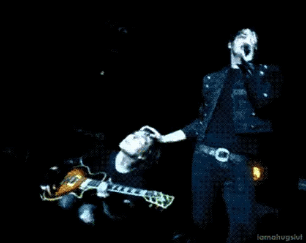
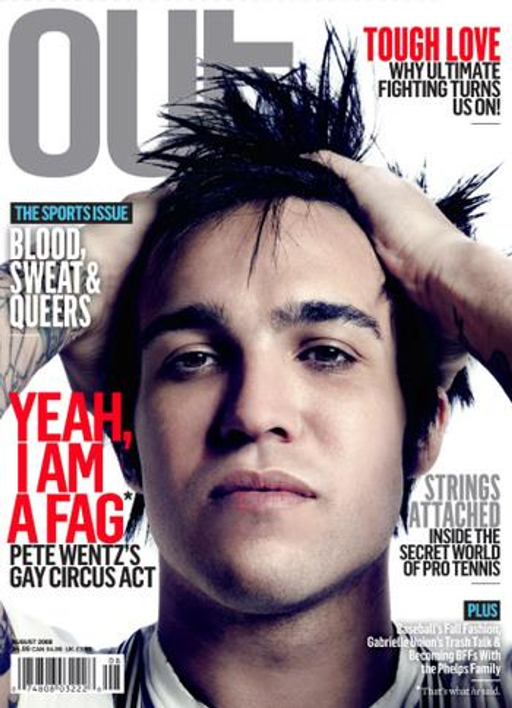
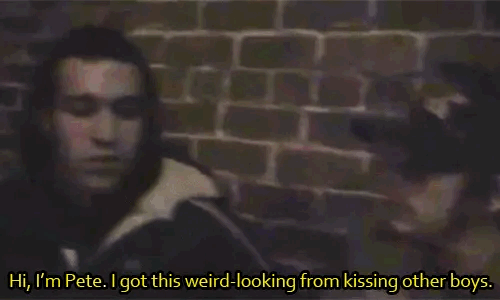
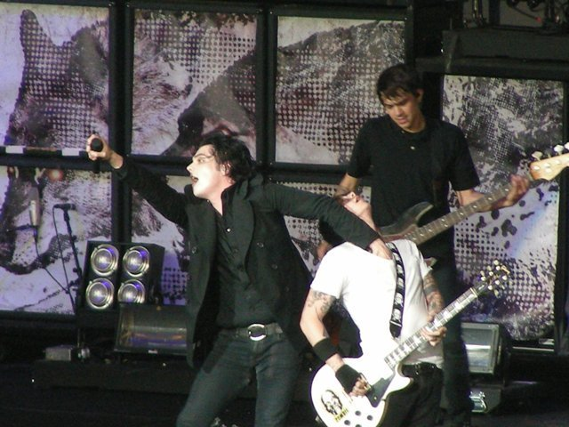
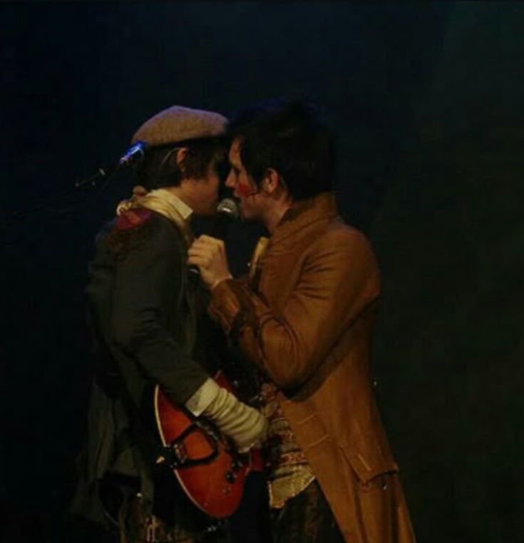
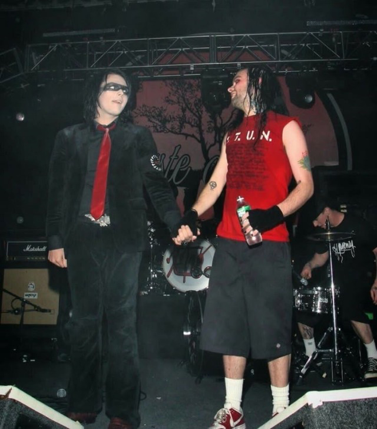
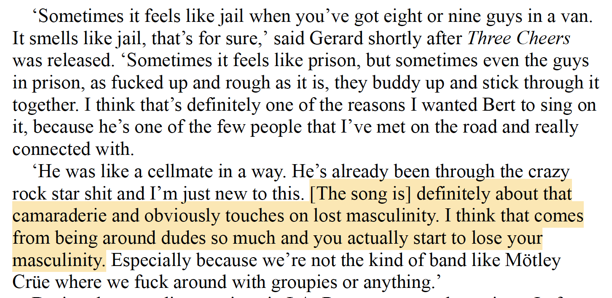
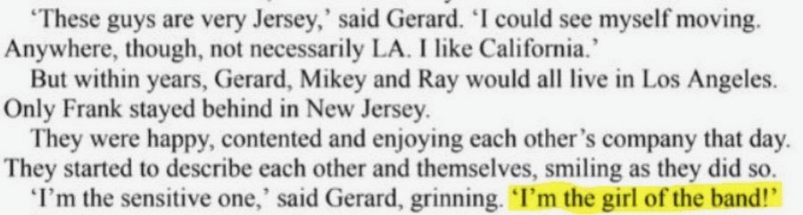

Broadly speaking, “stage gay” is a term that emo fans developed in the 2000s to describe the phenomenon where male emo musicians would perform homoerotic acts with each other onstage as innocent as snuggling or face-kissing, or as nasty as miming blow jobs or chewing on condoms attached to their microphones. This was to distinguish their performances of homosexuality from real gay, because essentially all of the men who engaged in these behaviors claimed to be straight offstage. My Chemical Romance notoriously described their stage gay behaviors as “political statements” designed to piss off homophobes in the pit and show solidarity with their queer fans. Importantly, the big three emo bands (My Chemical Romance, Fall Out Boy, and Panic! At The Disco) were all well-known stage gay proponents. Their public displays of queerness, along with their androgynous looks, were a huge part of what drew women and queer people to their fanbases specifically.
This phrasing became notorious due to widespread fan speculation that the members of the band might not actually be as straight at they claimed to be, but speculating about real people’s sexualities isn’t the point here, and isn't very interesting anyway. Judith May Fathallah once described stage gay as “nominally” a political statement, which is one of the cleanest and funniest ways to gesture toward all of this that I’ve ever seen.
To a certain extent, stage gay also extended beyond the literal “stage” and referred to band members’ other public acts of queerness, which usually happened online. Pete Wentz in particular was known to describe himself as gay in LiveJournal posts and then deny his queerness offline, as in his 2008 Out Magazine cover story where frames his public gayness as a challenge to 2000s-era “no homo” culture:
“Our culture bombards us with this idea that you’re not that, and if you are that, there’s something wrong with you, and then were going to call you that, and then it’s an insult. There is a sense of self-empowerment or recapturing who you are by people calling you fag, and being like, Yeah, I am a fag. Even though you’re not. What does somebody respond? That dude has nothing to say about that again.”
Pete’s quote here sounds a lot like notorious stage gay proponent Frank Iero’s approach, which he summarizes in the following way:
“If you feel like someone is being super aggro with you, and is kinda in your space when you don’t want them to be, my weapon of choice would be to say, Oh yeah, why don’t you say that into my mouth!”
Statements like these attempt to downplay stage gay, framing it as merely a rhetorical device designed to combat subcultural homophobia rather than an authentic expression of self. To their credit, making out with their boys sloppy style onstage was pretty effective at weeding homophobes out of their fanbases. Their outrageous behavior brought attention to bigotry in the scene which had previously flown largely under the radar, because when grown men start throwing bottles at Gerard Way’s head for licking his guitarist’s neck, suddenly homophobia in rock becomes a lot harder to overlook. A few of them also came out as queer later on, suggesting that stage gay maybe had some personal motivations in addition to its more obvious political-activist dimensions. But speculating about the personal lives of celebrities isn’t the purpose of this project, or ultimately very interesting anyway. (Well, unless these speculations formalize into a subcultural discourse, which we will get to in a moment.)
Instead of creating a complete timeline of 2000s emo stage gay, which many people have already written across various scattered LiveJournal and Tumblr posts, I want to focus specifically on one stage gay-adjacent bit that Gerard did repeatedly throughout their run on 2007’s Projekt Revolution tour. Being that this tour was organized and headlined by dude-favorite band Linkin Park, their crowds had a higher percentage of straight men than their solo headline tours, which women tended to dominate. (Although as you will see in the linked video, women’s higher voices still tend to respond to Gerard more readily.)
Most nights, Gerard would take a moment to directly address the boys in the crowd (just the boys!) who got consistently dominated by the MCR fangirls at every show. In a moment of apparent bro-style solidarity, he would excitedly encourage all of the men to take their shirts off and “swing them over [their] fucking heads!!!” in the same way that testosterone-fueled dudes have done at concerts and sports events for decades. Once he’d whipped the crowd up into a certifiable frenzy, the band would promptly launch into their cabaret-style banger about gay prison sex You Know What They Do To Guys Like Us In Prison, which, as it turns out, Gerard originally wrote about   
It’s so personally satisfying for me to watch femboy-sheriff Gerard flip rock’s “show us your tits” rhetoric around on its worst perpetrators, momentarily positioning the men as a passive spectacle for Gerard’s (and the straight female/gay male audience’s) enjoyment. Is it ethical? Probably not. Does it fucking rule? Yes. This bit, which they performed alongside Prison until their breakup in 2013, shows the band explicitly engaging with an established rock discourse (“show us your tits”) in order to make a statement about misogyny and homophobia in the 2000s rock scene which simultaneously empowers the large queer/femme audience at their shows. They essentially said to straight men: “You can be here, but you are not in control of this space.”
I, personally, am a huge stage gay apologist. I think it’s fun and exciting and a great way to attract the right audience, which is and always should be teen girls and queer freaks. But unfortunately, emo fandom (and music fandom more generally) has not always shared my feelings on this.
As time went on, stage gay got increasingly tangled up in “queerbaiting” discourse, where some fans felt that it was wrong for “straight” (again, 🤨) men to play at being gay onstage when they weren’t actually gay in their offstage lives. This always felt like a needlessly essentialist perspective on what queerness can look like to me, and I’m glad that in more recent years fans have begun to organize around the idea that real people cannot queerbait because they aren’t being written by some nefarious production studio or whatever. As Judith May Fathallah points out, queerbaiting accusations tend to make more sense if you graft them onto fictionalized media like films and TV shows. (These fan spaces are where the term originated.) She points out that with stage gay, “there is the question of “reality”: the stage is a space that exists somewhere between the fictional script and the everyday political life of human beings. It is real, but not true.”1 (emphasis mine) This point is crucial: it doesn’t matter whether or not the men sucking face onstage describe themselves as gay offstage, because the mere performance of queerness introduces real queerness into the subcultural space. As Fathallah argues, “performativity [in the Butlerian/Foucauldian sense] is the actualization of sexuality, and the homophobic and misogynist response from early hardcore shows demonstrates its effectiveness.”2 The stage-gay act itself is a real expression of queer sexuality, regardless of how the person doing it would describe themselves offstage because it impacts the subculture as though it were “true.”
At this point, I would love to direct you toward this related post I saw several years ago about someone’s gay uncle attending early My Chemical Romance shows, but like so many other posts that I stupidly did not save when I should have, I fear it is permanently lost to the Tumblr ether. What I can offer you though is my third-hand account of something that a stranger’s alleged gay uncle (maybe) said to them once, and although this citation practice is definitely questionable, it does kind of feel in the spirit of this project. For what it’s worth, I’m at least 80% sure this was posted by someone I actively follow on Tumblr, and two decades on the internet has given me a pretty good radar for when people are making up stories for attention. And regardless, the story of this unverified gay uncle strikes me as real anyway, even if it wasn’t true.
It goes like this: Several years ago I saw a post where someone talked about their gay uncle’s experience in early MCR fandom. He was apparently especially drawn to Frank for his chaotic performances, which often involved queer stunts and branding himself with all of the gay slurs hurled at him and his makeup-wearing band on the regular. He slapped PANSY across the body of his guitar in sparkly letters, he wore handmade shirts with “gay.” written on them in Sharpie, and he would, on occasion, drop to his knees in front of the band’s lead singer and nuzzle his face into his thighs. Or kiss his neck. Or stick his tongue into his mouth while he was trying to sing. His aggressive, explosive onstage attitude said yeah I’m a fucking pansy, yeah I’m a faggot, fuck you!!!! Whatever Frank was (or was not) doing with other men offstage was beside the point. This alleged gay uncle said that regardless of how Frank would have described his own sexuality at the time, what mattered to him was that Frank obviously understood what it meant to be a gay man in America in the early-2000s. That was what resonated with him, and Frank’s performance of queerness opened a space where he could connect with the band as a queer fan, on queer terms.
As Fathallah points out, performance is the actualization of sexuality. Sexuality is not a fixed state of being as much as it’s a bunch of little performances that happen in response to specific cultural contexts, which in my expert opinion, describes stage gay pretty fucking well. It doesn’t matter if Frank or Gerard or Pete or Ryan Ross or whoever are “actually” queer, because what is real, and what made queer kids feel seen, and what made all of those homophobic rock diehards so mad in the 2000s was the queer performance. So I guess to answer my initial question, and to reiterate the conclusion that Fathallah ultimately comes to in this article, stage gay is not queerbaiting. And I’m personally skeptical if queerbaiting even matters when the concept itself relies on such a strict definition of what it means to “be” queer in the first place.
1 Judith May Fathallah, “Is Stage Gay Queerbaiting? The Politics of Performance Homoeroticism in Emo Bands,” Journal of Popular Music Studies 33, no. 1 (2021): 123.
2 Judith May Fathallah, “Is Stage Gay Queerbaiting?,” 127.